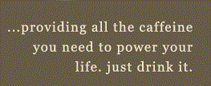
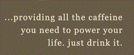

Мы с гордостью подаем освежающие напитки,
которые готовят наши друзья в гостевой Head First.
Охлажденный зеленый чай, $2.99
Охлажденный малиновый сироп, $2.99
Чудо-напиток из голубики, $2.99
Клюквенный антиоксидантный взрыв, $2.99
Чай «Льдинка», $2.99
«Подзарядка для мозга», $2.99
Starbuzz запускает… технологию «Чашка Tweet Sip»
Как и было обещано, сегодня я с гордостью объявляю, что кафе Starbuzz
запускает технологию «Чашка Tweet Sip» – это специальная чашка в кафе Starbuzz,
которая генерирует твит каждый раз, когда вы отпиваете из нее глоток!
Подробнее о нашем изобретении вы сможете узнать из моего видео.
Starbuzz meets social media
Здесь, в Starbuzz, мы следуем моде на социальные сети. Более того, мы опережаем всех наших конкурентов и очень близки…
Похоже на научную фантастику? На самом деле это реальность; печатая эти строки, я уже тестирую финальный прототип чашки…
Поэтому ожидайте появления этой новой удивительной чашки. Вскоре я выложу видео, из которого вы все узнаете об этом новом изобретении, прямо из кафе Starbuzz.
 
